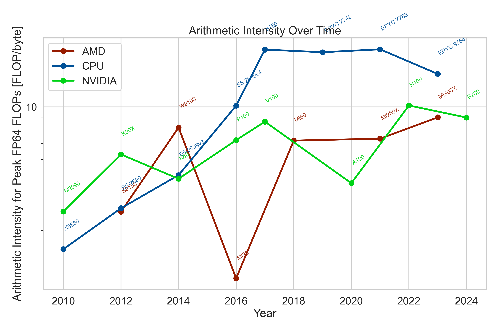
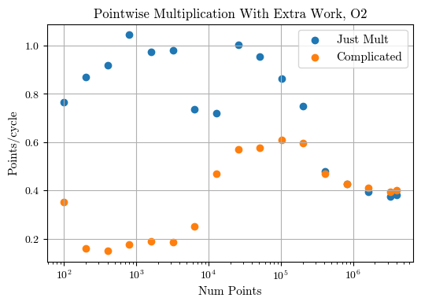
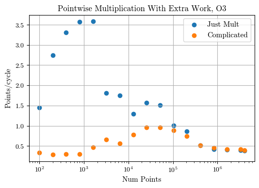
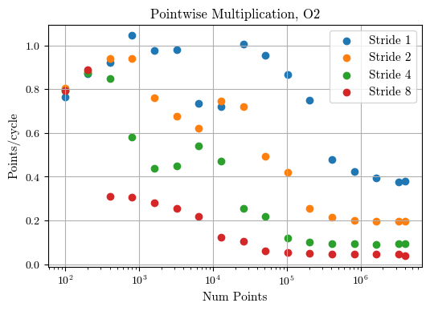
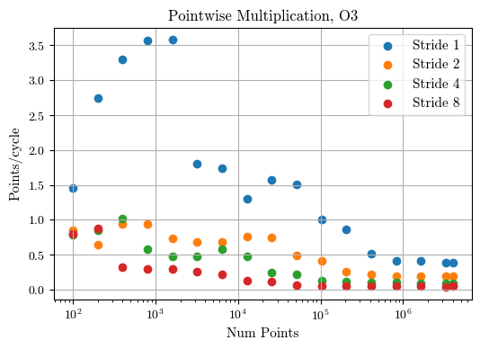

20260901 - Memory- and Compute-Bound Applications and How Vectorization Fails¶
Memory- and Compute-Bound Applications¶
i.e. Lab 2 Overview
Memory bandwidth¶
Using the stream program, I get the following results when I scale up memory:
The multiblock timing system doesn’t have enough granularity for the really small sizes
Stream autoscales how much work it averages over when dealing with small array values, which significantly helps the precision
Array Size |
Best MB/s for Triad |
Total Memory Required, KB |
|---|---|---|
100 |
58,579.7 |
2.4 |
200 |
61,458.8 |
4.8 |
400 |
64,706.1 |
9.6 |
800 |
64,585.7 |
19.2 |
1,600 |
65,040.6 |
38.4 |
3,200 |
64,190.3 |
76.8 |
6,400 |
63,868.8 |
153.6 |
12,800 |
60,603.8 |
307.2 |
25,600 |
60,026.2 |
614.4 |
51,200 |
57,246.8 |
1,228.8 |
102,400 |
49,525.7 |
2,457.6 |
204,800 |
47,607.2 |
4,915.2 |
409,600 |
32,205.2 |
9,830.4 |
819,200 |
26,189.7 |
19,660.8 |
1,638,400 |
25,178.6 |
39,321.6 |
3,276,800 |
24,541.3 |
78,643.2 |
4,000,000 |
24,080.7 |
96,000.0 |
My cache sizes:
Cache |
Size (KB) |
|---|---|
L1d |
48 |
L2 |
1,280 |
L3 |
8,192 |
Why doesn’t the bandwidth drops match up with the cache sizes?
Memory bandwidth, but with vectorization¶
Array Size |
Best MB/s for Triad |
Total Memory Required, KB |
|---|---|---|
100 |
262,007.5 |
2.4 |
200 |
217,603.3 |
4.8 |
400 |
237,637.6 |
9.6 |
800 |
264,069.5 |
19.2 |
1,600 |
265,462.3 |
38.4 |
3,200 |
106,297.0 |
76.8 |
6,400 |
106,409.7 |
153.6 |
12,800 |
106,007.3 |
307.2 |
25,600 |
98,456.1 |
614.4 |
51,200 |
88,063.5 |
1,228.8 |
102,400 |
53,615.9 |
2,457.6 |
204,800 |
53,273.7 |
4,915.2 |
409,600 |
33,730.1 |
9,830.4 |
819,200 |
27,994.6 |
19,660.8 |
1,638,400 |
25,726.7 |
39,321.6 |
3,276,800 |
24,847.7 |
78,643.2 |
4,000,000 |
24,332.4 |
96,000.0 |
My cache sizes:
Cache |
Size (KB) |
|---|---|
L1d |
48 |
L2 |
1,280 |
L3 |
8,192 |
Now the bandwidth drops are right in line with the cache
This is because vector instructions simply process data more rapidly, and stress the memory hierarchy more than scalar instructions
Possible todo: convert the table into CSV and then plot (with additional lines for the cache sizes)
Arithmetic Intensity¶
Due to the memory bandwidth limitations, much HPC computation is actually memory-bounded.
This can be visualized by looking at arithmetic intensity, measured as FLOP/byte
In other words, how much computation can we do with data in L1 cache in the time it takes for data from memory to be returned?

The ratio here sells the story short, as it takes 8 bytes to store/transport a single double precision number. So the FLOPs/scalar is about 8x the number reported above
Key point is this is theoretical, not measured; plenty of small things can get in the way of seeing these actual numbers
Requires cooperation of the compiler and good algorithms and giving the computer/compiler as much information it needs before computation
FLOPs are (sometimes) free!¶
The bandwidth limits of memory mean that we can actually do some computations for free.
void foo() {
for (int i=0; i<1000; i++) {
c[i] = a[i] * b[i];
}
}
void foo_complicated(int n) {
for (int i = 0; i < n; i++) {
double one = (a[i] * b[i]) / 2;
one = (one + one + 2) * 0.25;
for (int j = 0; j < 7; j++) {
one *= one;
}
c[i] = 2 * one;
}
}

At small array sizes, the extra computation slows the processing down
At large array sizes (once it has to go to RAM), they have the exact same speed, even though “complicated” does 13x the FLOPs
With vectorization, changes are just faster (though you can notice the cache steps more clearly with the “just mult” case)

Issues with Multiblock¶
With multiblock,
--inner_repswas supposed to increase the number of flops per byteBut we didn’t really see that expected “free FLOPs”
Why??
Conjecture:
The compiler doesn’t know abuot the size of the work needed to be done, so it couldn’t appropriately optimize for it
Therefore, the compiler has to maintain flexibility and be checking for input sizes when it runs
https://godbolt.org/z/fEssxjThh
Check it running perf stat
Short demo using perf stat:
Without hardcoding the --inner_reps and --block_size:
$ sudo perf stat ./multiblock_mysecond --outer_reps 10 --num_blocks=1000000 --block_size=8 --inner_reps 16
ops per block: 256
bytes per block: 64
malloc'ing 128000000 bytes
min seconds: 0.035862
avg seconds: 0.0364863
max Mops/second: 7138.481438
max MB/second: 3569.240719
Performance counter stats for './multiblock_mysecond --outer_reps 10 --num_blocks=1000000 --block_size=8 --inner_reps 16':
3 context-switches # 6.8 cs/sec cs_per_second
0 cpu-migrations # 0.0 migrations/sec migrations_per_second
4,745 page-faults # 10811.3 faults/sec page_faults_per_second
438.89 msec task-clock # nan CPUs CPUs_utilized
90,926 branch-misses # 0.0 % branch_miss_rate
672,494,762 branches # 1532.3 M/sec branch_frequency
1,782,295,990 cpu-cycles # 4.1 GHz cycles_frequency
5,072,295,141 instructions # 2.8 instructions insn_per_cycle
TopdownL1 # 45.8 % tma_backend_bound
# 1.6 % tma_bad_speculation
# 2.1 % tma_frontend_bound
# 50.5 % tma_retiring
0.441486307 seconds time elapsed
0.428358000 seconds user
0.011888000 seconds sys
With hardcoding the --inner_reps and --block_size:
$ sudo perf stat ./multiblock_mysecond --outer_reps 10 --num_blocks=1000000 --block_size=8 --inner_reps 16
ops per block: 256
bytes per block: 64
malloc'ing 128000000 bytes
min seconds: 0.0280612
avg seconds: 0.0284695
max Mops/second: 9122.932819
max MB/second: 4561.466410
Performance counter stats for './multiblock_mysecond --outer_reps 10 --num_blocks=1000000 --block_size=8 --inner_reps 16':
3 context-switches # 8.4 cs/sec cs_per_second
0 cpu-migrations # 0.0 migrations/sec migrations_per_second
13,943 page-faults # 38875.9 faults/sec page_faults_per_second
358.65 msec task-clock # nan CPUs CPUs_utilized
15,548 branch-misses # 0.1 % branch_miss_rate
29,985,086 branches # 83.6 M/sec branch_frequency
1,470,420,463 cpu-cycles # 4.1 GHz cycles_frequency
1,824,747,568 instructions # 1.2 instructions insn_per_cycle
TopdownL1 # 72.4 % tma_backend_bound
# 2.0 % tma_bad_speculation
# 1.0 % tma_frontend_bound
# 24.7 % tma_retiring
0.364968392 seconds time elapsed
0.341939000 seconds user
0.021883000 seconds sys
Notice…
The significant reduction in total of branches encountered in the code
The number of branch-misses encountered
Branch prediction is good, but it’s not perfect
We miss 4x the number of branches when not hardcoding values
The total increase in number of instructions
Impact of strides¶
Striding is effectively skipping between every nth scalar value.
void foo() {
for (int i=0; i<1000*stride; i+=stride) {
c[i] = a[i] * b[i];
}
}

Even though we do the same work (and thus use the same amount of memory) regardless of stride, we’re still slower
Why?
Cache lines
CPU must grab a full 64 byte chunk at a time
Even if we only want a single number from the chunk, we still have to pay for the full 64 byte transfer
This is the case for the 8 unit stride case
Strides with Vectorization¶

Vectorization doesn’t make a difference; the rate of computation at the end is still limited by memory
And now, for something completely different
Why vectorization fails?¶
Just because you have a for loop, doesn’t mean it can be vectorized. Or that a compiler will vectorize it.
Vector cost models¶
Compilers need to determine whether they it’s worth vectorizing a loop or not
Depends on the complexity of the loop, memory accesses, etc.
Sometimes, these cost models don’t align with what we the programmer knows
Enter pragmas, to specifically tell compilers to vectorize loops
void foo_complicated(int n) {
#pragma omp simd
for (int i = 0; i < n; i++) {
double one = (a[i] * b[i]) / 2;
one = (one + one + 2) * 0.25;
for (int j = 0; j < 7; j++) {
one *= one;
}
c[i] = 2 * one;
}
}
If statements¶
Branches within “hot loops” can prevent vectorization.
void foo(const double a[], double b[]) {
for (int i = 0; i < n; i++) {
if (a[i] > 0) {
b[i] = a[i];
} else {
b[i] = -a[i];
}
}
}
It is possible to vectorize these kinds of workloads, and compilers are quite good these days at getting them vectorized. But if you can avoid them, it will be significantly faster. See for example SIMD masking
Loop-carried dependency¶
double dot(const double a[], double b[]) {
for (int i = 0; i < n; i++) {
b[i] = b[i-1] * a[i];
}
return sum;
}
Result of
b[i]dependent on previous resultTherefore, each loop iteration is not independent and is impossible to vectorize
Math limitations¶
IEEE 754 sets the standard for floating point arithmetic
Sets very strict rules for how exactly operations are carried out to ensure bit-for-bit reproducability
Floating point operations are not associative: \(a + (b + c) \neq (a + b) + c\)
These strict rules can sometimes limit how much a compiler can vectorize
However, often times we don’t really care about bit-for-bit reproducability
The issues of floating point error are not a major concern
How do we get around it?
More compiler flags: -fassociative-math or -ffast-math
-ffast-math is dangerous and can have many unintended consequences. See this article for details. As a primer, any calls to isnan() or isinf() in GCC are completely ignored and removed with -ffast-math.
Reductions¶
Reductions: taking a large piece of data, doing the same operation to it to turn it into smaller piece of data
Example, dot product, or a vector norm
Dot product technically contains a loop-carried dependency
double dot(const double a[], double b[]) {
double sum = 0;
for (int i = 0; i < n; i++) {
sum += a[i] * b[i];
}
return sum;
}
https://johnnysswlab.com/loop-optimizations-how-does-the-compiler-do-it/#reductions
We can use OpenMP pragmas to have it do this for us!
Function calls within loop¶
double bar(double x) {
return x * x;
}
void foo(const double a[], double b[]) {
for (int i = 0; i < n; i++) {
a[i] = bar(b[i]);
}
https://godbolt.org/z/Ev3fb56En
Even if we know that array element is independent, the compiler external call can’t work
This is where function inlining can help
By inlining the function, the compiler can know exactly whether the loop can be vectorized and how
Can also be solved by declaring specific vectorized functions, see here for more details
Note, this is also true (especially true) for math functions:
void foo(const double a[], double b[]) {
for (int i = 0; i < n; i++) {
a[i] = sin(b[i]);
}
Language “vector” functions does not always equal vector instructions¶
Julia for instance allows for functions to be called on multiple scalar arguments. It calls this “vectorizing function”
Often times, it can turn these into actual vector instructions
But it will still run into similar limitations as C/C++
Example: doing vector instructions over some math functions doesn’t quite work.
Resources¶
https://johnnysswlab.com/loop-optimizations-interpreting-the-compiler-optimization-report/
https://johnnysswlab.com/loop-optimizations-interpreting-the-compiler-optimization-report/ (jump to “Pass: loop-vectorize”)